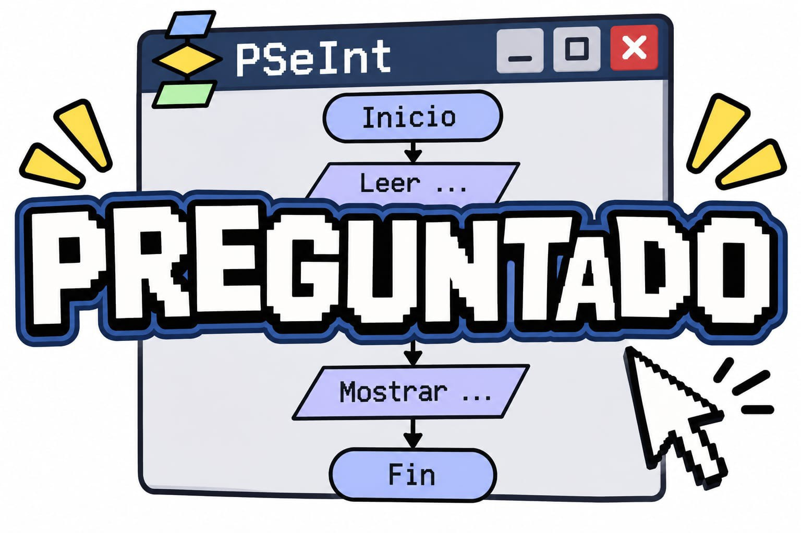

Preguntados
Es la versión web de mi programa de PSeInt. Tiene 10 preguntas con opciones A, B, C (y D en algunas). Por cada respuesta correcta sumás un punto y al final ves tu puntaje sobre 10.
Desarrollador: Iván Mazza · 3.er año · Informática
← Volver a los 4 proyectosPreguntados
INSTRUCCIONES DEL PREGUNTADO
Mi juego se llama Preguntados y consiste en responder una serie de preguntas de diferentes temas, como geografía, cultura, ciencias e informática.
Primero, se ejecuta el programa en PSeInt. Después, aparece una pregunta con varias opciones de respuesta, identificadas con las letras A, B, C y D.
El juego continúa hasta terminar las preguntas. Al final, el programa muestra el puntaje obtenido y permite saber cómo le fue al jugador.
El objetivo del juego es responder correctamente la mayor cantidad de preguntas posibles y poner a prueba nuestros conocimientos de una manera divertida.